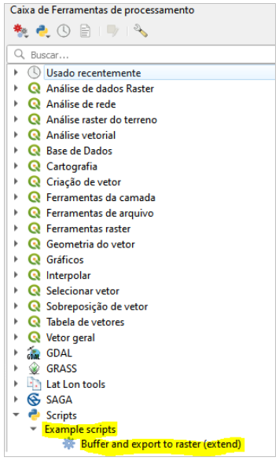

Instalando e abrindo o processing no QGIS
O processing é um complemento que normalmente já vem instalado no QGIS, porém para usá-lo é necessário ativar antes. Para ativá-lo, vá em: Complementos > Gerenciar e Instalar Complementos, como mostrado na figura abaixo:
Na tela que se abre em seguida, clique em “instalados”. Dê um check ao lado da opção Processing.
Na aba “Opções” deve ser encontrada a opção “Processar” (ou “Processing” na versão em Inglês). Clique nela e em seguida em “Caixa de ferramentas”.

No lado direito aparecerá a caixa de ferramentas de processamento. Nela, é possível encontrar vários processings nativos e outros pacotes de processings, como o GRASS, conforme mostrado na figura abaixo:
Na Caixa de Ferramentas de processamento é possível encontrar a opção “Scripts”. Esta opção permite trabalhar com processings através de um script em Python. As opções são: “Criar novo script”, “Criar novo script a partir do modelo”, “Abrir script existente” e “Adicionar script à caixa de ferramentas”.

Estrutura de um processing
Para usar um script de processamento é necessário clicar em “Criar novo Script a partir de modelo", na opção de script dentro da caixa de ferramentas. Uma tela nova abrirá com um modelo de script de um processing. Basicamente o script é dividido em quatro partes: importação dos objetos da API do QGIS, informações do algoritmo, definição dos parâmetros e lógica do algoritmo.

A primeira parte do algoritmo é a importação dos objetos da API do QGIS.

A segunda parte do algoritmo se refere às informações do algoritmo.
- Não se pode ter espaço entre os caracteres no nome da classe.
- O “tr” é utilizado para tradução da aplicação em diferentes línguas.

- “createInstance” retorna uma nova instância do algoritmo.

- “name” retorna o nome do algoritmo, sendo normalmente utilizadas letras minúsculas para isso.

- “displayName” é o que aparece na tela do usuário que for usar o algoritmo. Além disso, também é o nome que aparecerá na Caixa de Ferramentas.

- “group” retorna o nome do grupo ao que o algoritmo pertence. Este grupo também aparece na Caixa de Ferramentas ao adicionar o script à Caixa de Ferramentas.

- “groupId” retorna o identificador único do grupo ao qual o algoritmo pertence. Normalmente, são usadas apenas letras minúsculas.

- “shortHelpString” retorna uma pequena explicação sobre o algoritmo, que aparece na interface do usuário ao usar o processing.

A terceira parte do algoritmo, definição dos parâmetros, é onde se define os inputs e outputs do processing. É possível definir, nessa parte, valores default de input, definir a unidade de medida e o tipo de entrada e saída. Esses parâmetros devem ser declarados dentro de “initAlgorithm”.

A quarta, e última parte, do processing, lógica do algoritmo, é onde ocorre toda a função a ser executada com os parâmetros de entrada e retornando as saídas. Esta parte normalmente se inicia acessando os parâmetros de entrada nos formatos desejados e que serão utilizados ao longo do código. Essa parte deve ficar dentro de “processAlgorithm”.
Executando o processing via Python
A execução de processings pode se dar por meio do console Python existente no QGIS. Isso ocorre através de uma estrutura fixa e menos intuitiva, porém de grande utilidade, uma vez que o usuário pode entender cada passo que será executado pelo processing e identificar possíveis erros.

Na linha 1 é carregada a camada como “uri”. A seguir, processing.run() é o que de fato executa o processing sobre a camada de entrada. Em seguida, são informados os parâmetros e as camadas de entrada, sequencialmente, e separados por vírgula. Veja que pode ser necessário mais de uma camada de entrada, nesse caso existiria mais de um ‘INPUT’ e seria necessário carregar mais camadas antes, por exemplo uma “uri_2”.
Na janela à esquerda dos resultados do código rodado, aparecem diversas informações acerca do processing, incluindo o que ele faz, os campos a serem preenchidos e o tipo de cada elemento.
Executando o processing em série (GRASS e Nativo)
Executar processings em série, na interface do PyQGIS, nada mais é do que executar sucessivamente vários processings, usando a saída de um (output) como parâmetro ou entrada (input) de outro. Para isso, é necessário conhecer exatamente o nome do processing e os parâmetros de entrada.
No exemplo abaixo, inicialmente, carrega-se três camadas e define-se “expression”. O primeiro processing então é executado, e o resultado é salvo como “danube”.

A seguir mais uma variável é definida e o segundo processing é executado. Perceba que na entrada dele é passado o resultado do primeiro, “danube”. Por fim, o procedimento é repetido para o terceiro processing, e o resultado final é exibido no QGIS pelo comando da linha 21.
Definindo parâmetros de entrada e saída
Os parâmetros são definidos na função "InitAlgorithm(self, config = none)”. Sucessivamente, são definidos os INPUTs, parâmetros auxiliares e OUTPUTs.
- INPUTS: é importante definir o tipo de camada de entrada, como Point, Line ou Polygon, na última linha.

- Parâmetros:
- OUTPUTS:
Após definir os parâmetros na parte “def InitAlgorithm()”, é importante chamá-los no código principal. A estrutura para realizar essa chamada é sempre a mesma:

Executando processing dentro do processing
É possível, e às vezes bastante útil, executar um processing já existente dentro de um processing que esteja sendo criado. Para isso, utiliza-se uma estrutura bastante similar à execução de processing na interface em Python do QGIS.

Os processings são chamados na parte do código principal, em “def processAlgorithm( )”, conforme a figura acima. Após isso, o resultado do processing é salvo no parâmetro de “processing.run( )” e pode ser utilizado futuramente no código.
Modificando camadas vetoriais via processing
É possível adicionar feições às camadas vetoriais utilizando-se o recurso “addFeatures( )”, conforme a figura abaixo:
É possível também excluir feições com o recurso “deleteFeatures( )”.
É possível modificar feições com o recurso “changeAttributeValues( )”, no caso de valores de atributos, ou “changeGeometryValues( )”, no caso de geometria.

Usando o feedback no processing
Algumas etapas dentro do processing podem levar um longo tempo para serem executadas, fazendo com que o usuário não tenha controle sobre a etapa que está sendo realizada. Um recurso que pode ajudar nesse problema é o “feedback”.
O feedback é feito através do comando “feedback.setProgressText(‘Digite aqui o feedback...’)” e é posto ao longo do código antes da etapa na qual se deseja localizar.

No código acima, pode-se notar o feedback na linha 179, que auxilia o usuário a saber em qual etapa do processing encontra-se, no caso, se já está “Calculando diferença”. Portanto, é indicado seu uso antes de cada etapa do processing.
Classes QgsProcessingParameter
Algumas classes muito interessantes no desenvolvimento PyQGIS são as do tipo QgsProcessingParameter. Abaixo, listamos aquelas bastante utilizadas em nossos códigos:
-
QgsProcessingParameterVectorLayer (https://qgis.org/pyqgis/master/core/QgsProcessingParameterVectorLayer.html)
-
QgsProcessingParameterFeatureSink (https://qgis.org/pyqgis/master/core/QgsProcessingParameterFeatureSink.html)
-
QgsProcessingParameterNumber (https://qgis.org/pyqgis/master/core/QgsProcessingParameterNumber.html)
-
QgsProcessingParameterMultipleLayers (https://qgis.org/pyqgis/master/core/QgsProcessingParameterMultipleLayers.html)
-
QgsProcessingParameterField (https://qgis.org/pyqgis/master/core/QgsProcessingParameterField.html)
-
QgsProcessingParameterString (https://qgis.org/pyqgis/master/core/QgsProcessingParameterString.html)
-
QgsProcessingParameterFeatureSource (https://qgis.org/pyqgis/master/core/QgsProcessingParameterFeatureSource.html)